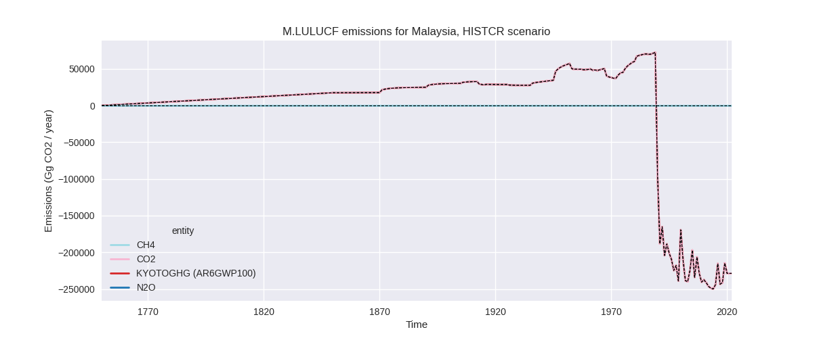
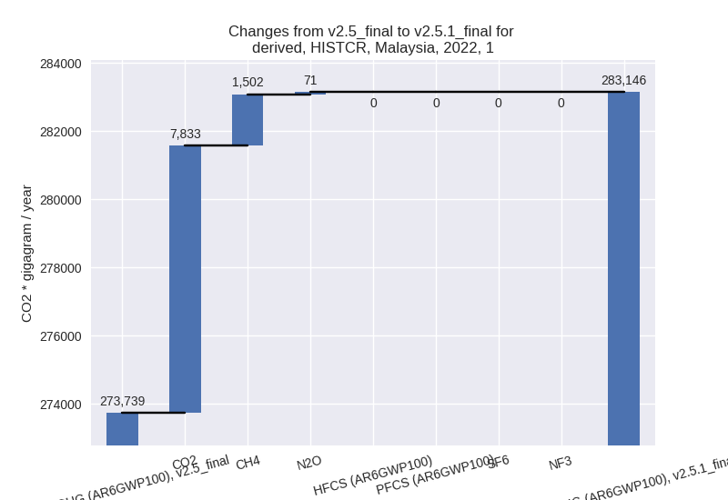
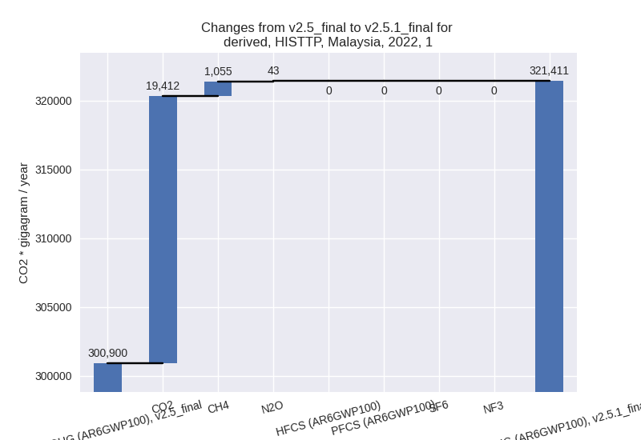

Changes in PRIMAP-hist v2.5.1_final compared to v2.5_final for Malaysia
2024-02-29
Johannes Gütschow
Change analysis for Malaysia for PRIMAP-hist v2.5.1_final compared to v2.5_final
Overview over emissions by sector and gas
The following figures show the aggregate national total emissions excluding LULUCF AR6GWP100 for the country reported priority scenario. The dotted linesshow the v2.5_final data.

The following figures show the aggregate national total emissions excluding LULUCF AR6GWP100 for the third party priority scenario. The dotted linesshow the v2.5_final data.
Overview over changes
In the country reported priority scenario we have the following changes for aggregate Kyoto GHG and national total emissions excluding LULUCF (M.0.EL):
- Emissions in 2022 have changed by 5.0%% (17770.18 Gg CO2 / year)
- Emissions in 1990-2022 have changed by 0.5%% (1137.53 Gg CO2 / year)
In the third party priority scenario we have the following changes for aggregate Kyoto GHG and national total emissions excluding LULUCF (M.0.EL):
- Emissions in 2022 have changed by 3.5%% (12889.13 Gg CO2 / year)
- Emissions in 1990-2022 have changed by -1.9%% (-4663.83 Gg CO2 / year)
Most important changes per scenario and time frame
In the country reported priority scenario the following sector-gas combinations have the highest absolute impact on national total KyotoGHG (AR6GWP100) emissions in 2022 (top 5):
- 1: 1.A, CO2 with 7832.08 Gg CO2 / year (3.1%)
- 2: 2, CO2 with 6830.72 Gg CO2 / year (25.2%)
- 3: 1.B.2, CH4 with 1399.96 Gg CO2 / year (7.7%)
- 4: M.AG.ELV, N2O with 925.94 Gg CO2 / year (17.9%)
- 5: 4, CH4 with 650.38 Gg CO2 / year (2.0%)
In the country reported priority scenario the following sector-gas combinations have the highest absolute impact on national total KyotoGHG (AR6GWP100) emissions in 1990-2022 (top 5):
- 1: 1.A, CO2 with 674.52 Gg CO2 / year (0.4%)
- 2: 2, CO2 with 309.89 Gg CO2 / year (2.3%)
- 3: M.AG.ELV, N2O with 73.62 Gg CO2 / year (1.7%)
- 4: 1.B.2, CH4 with 44.36 Gg CO2 / year (0.2%)
- 5: 4, CH4 with 19.71 Gg CO2 / year (0.1%)
In the third party priority scenario the following sector-gas combinations have the highest absolute impact on national total KyotoGHG (AR6GWP100) emissions in 2022 (top 5):
- 1: 1.A, CO2 with 19411.30 Gg CO2 / year (7.4%)
- 2: 2, CO2 with -4515.67 Gg CO2 / year (-17.5%)
- 3: M.AG.ELV, N2O with -2645.77 Gg CO2 / year (-32.3%)
- 4: 1.B.2, CH4 with 603.66 Gg CO2 / year (1.7%)
- 5: M.AG.ELV, CO2 with -434.72 Gg CO2 / year (-25.7%)
In the third party priority scenario the following sector-gas combinations have the highest absolute impact on national total KyotoGHG (AR6GWP100) emissions in 1990-2022 (top 5):
- 1: 2, CO2 with -3728.16 Gg CO2 / year (-22.1%)
- 2: M.AG.ELV, N2O with -2409.63 Gg CO2 / year (-32.9%)
- 3: 1.A, CO2 with 2000.68 Gg CO2 / year (1.2%)
- 4: 1.B.2, CH4 with -429.81 Gg CO2 / year (-1.4%)
- 5: M.AG.ELV, CO2 with -152.90 Gg CO2 / year (-11.9%)
Notes on data changes
No country specific notes present for this changelog.
Changes by sector and gas
For each scenario and time frame the changes are displayed for all individual sectors and all individual gases. In the sector plot we use aggregate Kyoto GHGs in AR6GWP100. In the gas plot we usenational total emissions without LULUCF. ## country reported scenario
2022
1990-2022

third party scenario
2022
1990-2022
Detailed changes for the scenarios:
country reported scenario (HISTCR):
Most important changes per time frame
For 2022 the following sector-gas combinations have the highest absolute impact on national total KyotoGHG (AR6GWP100) emissions in 2022 (top 5):
- 1: 1.A, CO2 with 7832.08 Gg CO2 / year (3.1%)
- 2: 2, CO2 with 6830.72 Gg CO2 / year (25.2%)
- 3: 1.B.2, CH4 with 1399.96 Gg CO2 / year (7.7%)
- 4: M.AG.ELV, N2O with 925.94 Gg CO2 / year (17.9%)
- 5: 4, CH4 with 650.38 Gg CO2 / year (2.0%)
For 1990-2022 the following sector-gas combinations have the highest absolute impact on national total KyotoGHG (AR6GWP100) emissions in 1990-2022 (top 5):
- 1: 1.A, CO2 with 674.52 Gg CO2 / year (0.4%)
- 2: 2, CO2 with 309.89 Gg CO2 / year (2.3%)
- 3: M.AG.ELV, N2O with 73.62 Gg CO2 / year (1.7%)
- 4: 1.B.2, CH4 with 44.36 Gg CO2 / year (0.2%)
- 5: 4, CH4 with 19.71 Gg CO2 / year (0.1%)
Changes in the main sectors for aggregate KyotoGHG (AR6GWP100) are
- 1: Total sectoral emissions in 2022 are 283145.61
Gg CO2 / year which is 75.8% of M.0.EL emissions. 2022 Emissions have
changed by 3.4% (9406.19 Gg CO2 /
year). 1990-2022 Emissions have changed by 0.4% (733.46 Gg CO2 / year). For 2022 the
changes per gas
are:

The changes come from the following subsectors:- 1.A: Total sectoral emissions in 2022 are 260597.45
Gg CO2 / year which is 92.0% of category 1 emissions. 2022 Emissions
have changed by 3.2% (8001.95 Gg CO2
/ year). 1990-2022 Emissions have changed by 0.4% (688.78 Gg CO2 / year). For 2022 the
changes per gas
are:
There is no subsector information available in PRIMAP-hist. - 1.B.1: Total sectoral emissions in 2022 are 38.31
Gg CO2 / year which is 0.0% of category 1 emissions. 2022 Emissions have
changed by 22.4% (7.02 Gg CO2 /
year). 1990-2022 Emissions have changed by 1.1% (0.29 Gg CO2 / year). For 2022 the
changes per gas
are:
There is no subsector information available in PRIMAP-hist. - 1.B.2: Total sectoral emissions in 2022 are
22509.85 Gg CO2 / year which is 7.9% of category 1 emissions. 2022
Emissions have changed by 6.6%
(1397.21 Gg CO2 / year). 1990-2022 Emissions have changed by 0.2% (44.40 Gg CO2 / year). For 2022 the
changes per gas
are:
There is no subsector information available in PRIMAP-hist.
- 1.A: Total sectoral emissions in 2022 are 260597.45
Gg CO2 / year which is 92.0% of category 1 emissions. 2022 Emissions
have changed by 3.2% (8001.95 Gg CO2
/ year). 1990-2022 Emissions have changed by 0.4% (688.78 Gg CO2 / year). For 2022 the
changes per gas
are:
- 2: Total sectoral emissions in 2022 are 44317.99 Gg
CO2 / year which is 11.9% of M.0.EL emissions. 2022 Emissions have
changed by 18.3% (6857.99 Gg CO2 /
year). 1990-2022 Emissions have changed by 1.8% (311.56 Gg CO2 / year). For 2022 the
changes per gas
are:
- M.AG: Total sectoral emissions in 2022 are 11016.83
Gg CO2 / year which is 3.0% of M.0.EL emissions. 2022 Emissions have
changed by 8.1% (825.60 Gg CO2 /
year). 1990-2022 Emissions have changed by 0.8% (71.89 Gg CO2 / year). For 2022 the
changes per gas
are:
The changes come from the following subsectors:- 3.A: Total sectoral emissions in 2022 are 2036.24 Gg CO2 / year which is 18.5% of category M.AG emissions. 2022 Emissions have changed by 0.7% (15.09 Gg CO2 / year). 1990-2022 Emissions have changed by 0.1% (1.72 Gg CO2 / year).
- M.AG.ELV: Total sectoral emissions in 2022 are
8980.59 Gg CO2 / year which is 81.5% of category M.AG emissions. 2022
Emissions have changed by 9.9%
(810.51 Gg CO2 / year). 1990-2022 Emissions have changed by 1.0% (70.17 Gg CO2 / year). For 2022 the
changes per gas
are:

There is no subsector information available in PRIMAP-hist.
- 4: Total sectoral emissions in 2022 are 33766.77 Gg CO2 / year which is 9.0% of M.0.EL emissions. 2022 Emissions have changed by 2.0% (649.04 Gg CO2 / year). 1990-2022 Emissions have changed by 0.1% (19.67 Gg CO2 / year).
- 5: Total sectoral emissions in 2022 are 1051.82 Gg
CO2 / year which is 0.3% of M.0.EL emissions. 2022 Emissions have
changed by 3.1% (31.36 Gg CO2 /
year). 1990-2022 Emissions have changed by 0.1% (0.95 Gg CO2 / year). For 2022 the
changes per gas
are:
third party scenario (HISTTP):
Most important changes per time frame
For 2022 the following sector-gas combinations have the highest absolute impact on national total KyotoGHG (AR6GWP100) emissions in 2022 (top 5):
- 1: 1.A, CO2 with 19411.30 Gg CO2 / year (7.4%)
- 2: 2, CO2 with -4515.67 Gg CO2 / year (-17.5%)
- 3: M.AG.ELV, N2O with -2645.77 Gg CO2 / year (-32.3%)
- 4: 1.B.2, CH4 with 603.66 Gg CO2 / year (1.7%)
- 5: M.AG.ELV, CO2 with -434.72 Gg CO2 / year (-25.7%)
For 1990-2022 the following sector-gas combinations have the highest absolute impact on national total KyotoGHG (AR6GWP100) emissions in 1990-2022 (top 5):
- 1: 2, CO2 with -3728.16 Gg CO2 / year (-22.1%)
- 2: M.AG.ELV, N2O with -2409.63 Gg CO2 / year (-32.9%)
- 3: 1.A, CO2 with 2000.68 Gg CO2 / year (1.2%)
- 4: 1.B.2, CH4 with -429.81 Gg CO2 / year (-1.4%)
- 5: M.AG.ELV, CO2 with -152.90 Gg CO2 / year (-11.9%)
Changes in the main sectors for aggregate KyotoGHG (AR6GWP100) are
- 1: Total sectoral emissions in 2022 are 321410.83
Gg CO2 / year which is 85.3% of M.0.EL emissions. 2022 Emissions have
changed by 6.8% (20510.41 Gg CO2 /
year). 1990-2022 Emissions have changed by 0.8% (1622.43 Gg CO2 / year). For 2022 the
changes per gas
are:

The changes come from the following subsectors:- 1.A: Total sectoral emissions in 2022 are 282051.75
Gg CO2 / year which is 87.8% of category 1 emissions. 2022 Emissions
have changed by 7.5% (19618.62 Gg
CO2 / year). 1990-2022 Emissions have changed by 1.2% (2011.33 Gg CO2 / year). For 2022 the
changes per gas
are:
There is no subsector information available in PRIMAP-hist. - 1.B.1: Total sectoral emissions in 2022 are 688.96
Gg CO2 / year which is 0.2% of category 1 emissions. 2022 Emissions have
changed by 76.0% (297.49 Gg CO2 /
year). 1990-2022 Emissions have changed by 4.6% (41.22 Gg CO2 / year). For 2022 the
changes per gas
are:
For 1990-2022 the changes per gas are:
There is no subsector information available in PRIMAP-hist. - 1.B.2: Total sectoral emissions in 2022 are 38670.12 Gg CO2 / year which is 12.0% of category 1 emissions. 2022 Emissions have changed by 1.6% (594.30 Gg CO2 / year). 1990-2022 Emissions have changed by -1.3% (-430.11 Gg CO2 / year).
- 1.A: Total sectoral emissions in 2022 are 282051.75
Gg CO2 / year which is 87.8% of category 1 emissions. 2022 Emissions
have changed by 7.5% (19618.62 Gg
CO2 / year). 1990-2022 Emissions have changed by 1.2% (2011.33 Gg CO2 / year). For 2022 the
changes per gas
are:
- 2: Total sectoral emissions in 2022 are 25584.50 Gg
CO2 / year which is 6.8% of M.0.EL emissions. 2022 Emissions have
changed by -15.2% (-4583.14 Gg CO2 /
year). 1990-2022 Emissions have changed by -19.5% (-3726.41 Gg CO2 / year). For 2022
the changes per gas
are:
For 1990-2022 the changes per gas are: - M.AG: Total sectoral emissions in 2022 are 12088.31
Gg CO2 / year which is 3.2% of M.0.EL emissions. 2022 Emissions have
changed by -20.5% (-3117.60 Gg CO2 /
year). 1990-2022 Emissions have changed by -18.0% (-2562.26 Gg CO2 / year). For 2022
the changes per gas
are:
For 1990-2022 the changes per gas are:
The changes come from the following subsectors:- 3.A: Total sectoral emissions in 2022 are 2001.89 Gg CO2 / year which is 16.6% of category M.AG emissions. 2022 Emissions have changed by 0.3% (6.24 Gg CO2 / year). 1990-2022 Emissions have changed by 0.0% (0.69 Gg CO2 / year).
- M.AG.ELV: Total sectoral emissions in 2022 are
10086.42 Gg CO2 / year which is 83.4% of category M.AG emissions. 2022
Emissions have changed by -23.6%
(-3123.84 Gg CO2 / year). 1990-2022 Emissions have changed by -21.3% (-2562.95 Gg CO2 / year). For 2022
the changes per gas
are:
For 1990-2022 the changes per gas are:
There is no subsector information available in PRIMAP-hist.
- 4: Total sectoral emissions in 2022 are 16669.94 Gg CO2 / year which is 4.4% of M.0.EL emissions. 2022 Emissions have changed by 0.3% (48.10 Gg CO2 / year). 1990-2022 Emissions have changed by 0.0% (1.46 Gg CO2 / year).
- 5: Total sectoral emissions in 2022 are 1051.82 Gg
CO2 / year which is 0.3% of M.0.EL emissions. 2022 Emissions have
changed by 3.1% (31.36 Gg CO2 /
year). 1990-2022 Emissions have changed by 0.1% (0.95 Gg CO2 / year). For 2022 the
changes per gas
are: